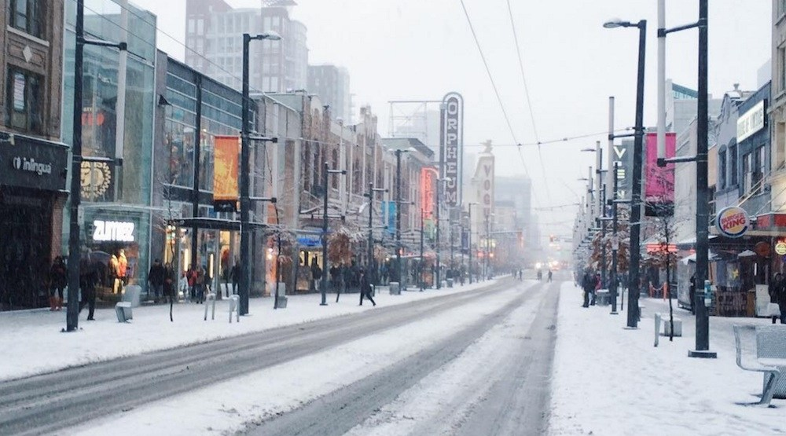
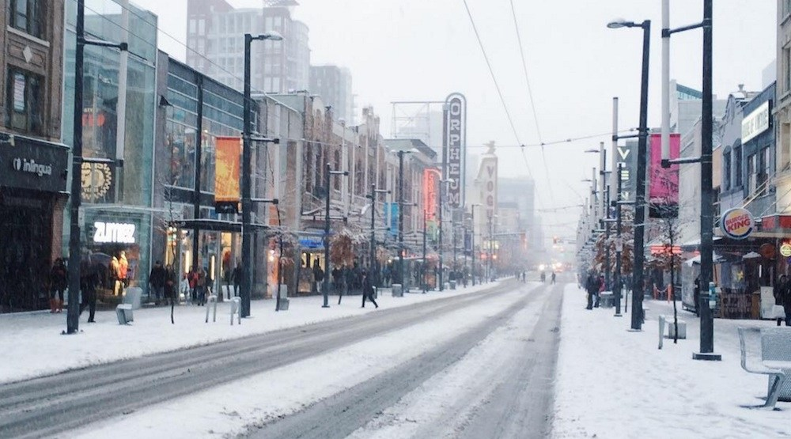

Destino Turístico: Canada

O Canadá (em inglês: Canada, pronunciado [ˈkænədə] ( ouvir); em francês: Canada, pronunciado: [kanada]) é um país que ocupa grande parte da América do Norte e se estende desde o oceano Atlântico, a leste, até o oceano Pacífico, a oeste. Ao norte o país é limitado pelo oceano Ártico.
A palavra Canadá deriva de “kanata”, que significa “pequena povoação” ou “a vila” no idioma indígena. Em 1535, nativos americanos vivendo na região utilizaram a palavra para explicar ao explorador francês Jacques Cartier o caminho para a aldeia de Stadacona, local onde se encontra atualmente a cidade de Quebec.
O hino canadense foi adotado em 1980, originalmente encomendado pelo vice-governador de Quebec para a cerimônia do Feriado Nacional de Quebec. Calixa Lavallée escreveu a música, que foi uma adaptação de um poema patriótico composto pelo poeta Adolphe-Basile Routhier. Você pode ver a letra e escutar a música de “O Canada” em versão inglesa, no vídeo abaixo.
A divisa do Canadá com os Estados Unidos é a mais longa do mundo, e está dividida em duas partes: uma entre o sul do Canadá e os estados continentais dos EUA, com 6.414 km. E a outra, entre o oeste do Canadá e o Alasca, com 2.477 km. Se você estiver no Canadá e possuir o visto americano, poderá visitar cidades como Chicago, Nova York e Seattle, num pulo. No leste da fronteira, ficam as Cataratas do Niágara, uma parada obrigatória e somente a duas horas de Toronto.
O basquete pode ser muito popular nos Estados Unidos, mas o crédito pela invenção do esporte é dos canadenses. Mais especificamente, do professor James Naismith (foto). Com 30 anos, em 1891, ele teve a missão de criar um jogo que estimulasse seus alunos durante o inverno, mas que pudesse também ser praticado no verão em áreas abertas. Cesta de três pontos para o professor James! O Canadá também é a terra de diversas invenções, incluindo a lâmpada elétrica, microscópio, televisão, entre outros.
Quase todas as escolas e universidades canadenses possuem quadras para a prática do hóquei no gelo. O jogo foi criado em 1834, como uma adaptação da modalidade de campo dos ingleses. Os primeiros a deslizar sobre espelhos de água congelada foram os soldados britânicos em Kingston, Ontário. Os times mais tradicionais da liga oficial são Ottawa Senators e Montreal Canadiens. Também praticado no gelo, o curling é um esporte olímpico com muitos adeptos no Canadá, porém de origem escocesa.
 
